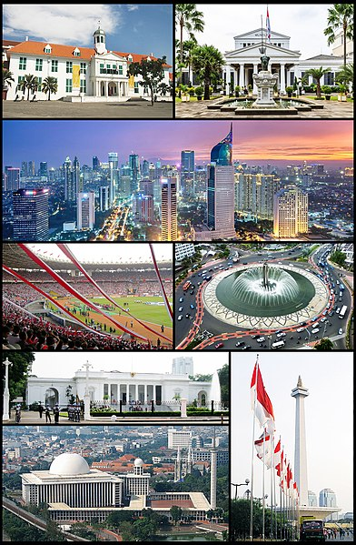
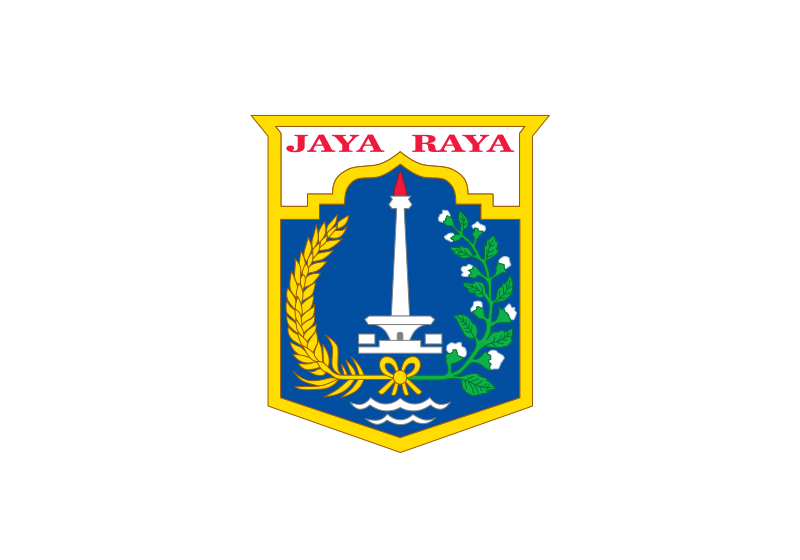
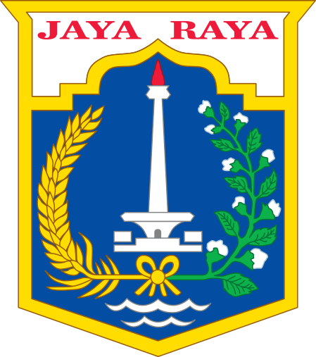
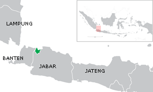

Daerah Khusus Ibukota JakartaSunda Kelapa · Jayakarta · Batavia |
|---|
| Ibu kota negara Indonesia |
| 
(Dari atas, kiri ke kanan): Kota Tua Jakarta, |
|   Bendera Lambang |
|
Julukan: The Big Durian, J-Town [1] |
|  Peta |
"Jakarta" dan "DKI" beralih ke halaman ini. Untuk kegunaan lain, lihat Jakarta (disambiguasi) dan DKI (disambiguasi).
Daerah Khusus Ibukota Jakarta (DKI Jakarta) adalah ibu kota negara dan
kota terbesar di Indonesia.Jakarta merupakan satu-satunya kota
di Indonesia yang
memiliki status setingkat provinsi. Jakarta terletak di pesisir bagian barat laut Pulau
Jawa. Dahulu pernah dikenal dengan
beberapa nama di antaranya Sunda Kelapa,
Jayakarta, dan Batavia. Di dunia internasional Jakarta juga mempunyai julukan J-
Town,
[9] atau
lebih populer lagi The Big Durian karena dianggap kota yang
sebanding New York City (Big Apple) di Indonesia.
[10]
Jakarta memiliki luas sekitar 664,01 km2 (lautan: 6.977,5 km2), dengan penduduk berjumlah 10.557.810 jiwa (2019). [3] Wilayah metropolitan Jakarta (Jabodetabek) yang berpenduduk sekitar 28 juta jiwa,[4] merupakan metropolitan terbesar di Asia Tenggara atau urutan kedua di dunia.
Sebagai pusat bisnis, politik, dan kebudayaan, Jakarta merupakan tempat berdirinya kantor-kantor pusat BUMN, perusahaan swasta, dan perusahaan asing. Kota ini juga menjadi tempat kedudukan lembaga-lembaga pemerintahan dan kantor sekretariat ASEAN. Jakarta dilayani oleh dua bandar udara, yakni Bandara Soekarno–Hatta dan Bandara Halim Perdanakusuma, serta tiga pelabuhan laut di Tanjung Priok, Sunda Kelapa, dan Ancol. [11][12][13]
Daftar Isi
|